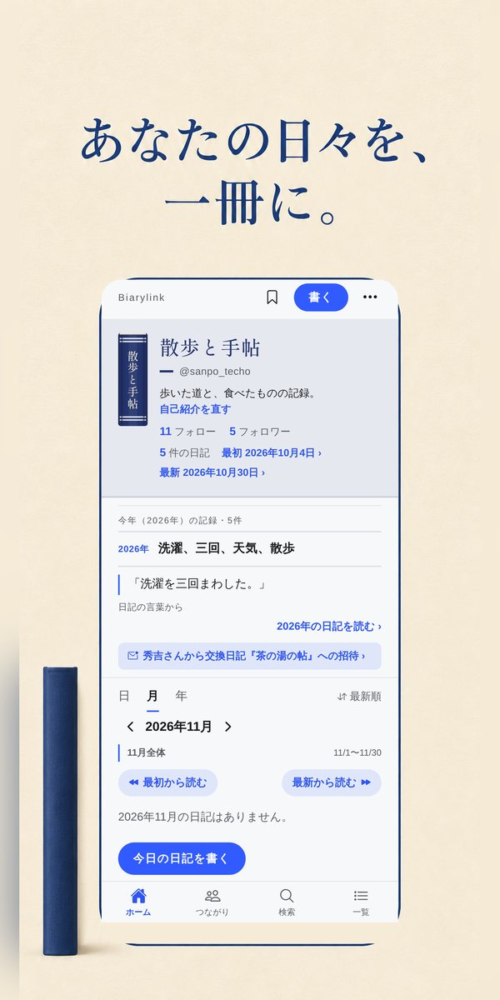
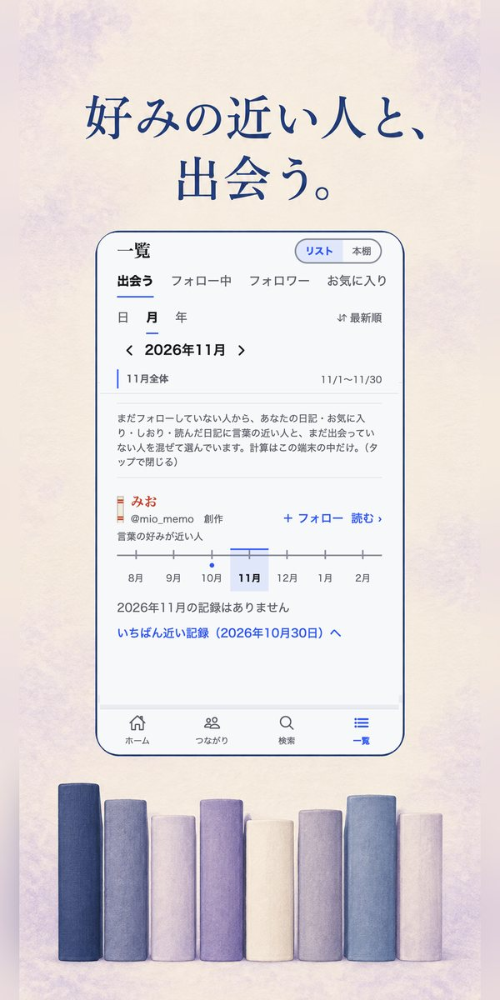
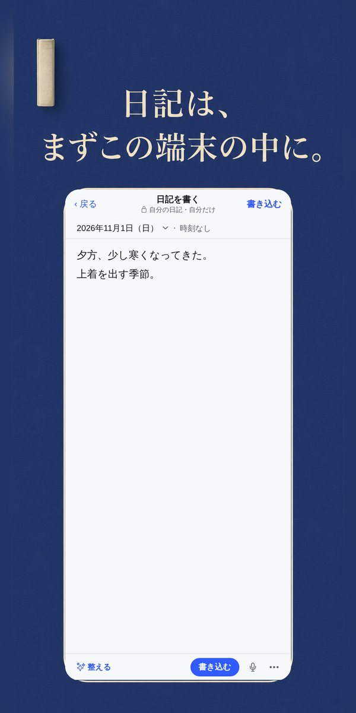

Tired of posting just to be seen?
Biarylink is a place to write for yourself first, before showing anyone.
Tired of hunting for the perfect photo
Most days don’t come with a pretty picture. Here it’s words only — just write what happened today.
You don’t want to care about likes
This isn’t a place to compete on numbers. Your diary stays on your device first. You can decide later whether to share it.
Writing properly every day is hard
One line is enough — or use your voice. Only on the days you can. Flip back by day, month and year, and it has quietly become a book.
Everything is free
No account needed to start, and no ads. Try writing first, and keep going if you like it.
Screens
Swipe sideways to see more. (Shown in Japanese.)





What you can do
Write, read back, and read someone’s today.
Write
Jot down today, even in one line. You can also write by voice. Your diary is saved on this device first.
Read it back as your own book
Choose the spine’s color, pattern and typeface. Slide along day, month and year to reach old entries. Slip in a bookmark and pick up where you left off.
Someone’s today
Forty fictional characters keep writing their diaries — a convenience-store night clerk, an aquarium keeper, a cook in Antarctica… The characters and their diaries are fiction, and the diaries are written in Japanese.
Discover
Shows people whose words are close to your diary and the diaries you’ve read. The matching runs only on your device.
Sharing and connections
Entries you share with “Everyone” can be read by other signed-in users. You can follow, block and report.
What we care about
You can export your diary and keep a copy at any time. Entries holding things you can’t say out loud are shown folded by default.
Also works in your browser: biarylink.ookamicompany.com ／ Privacy Policy ／ Terms of Use (both in Japanese)